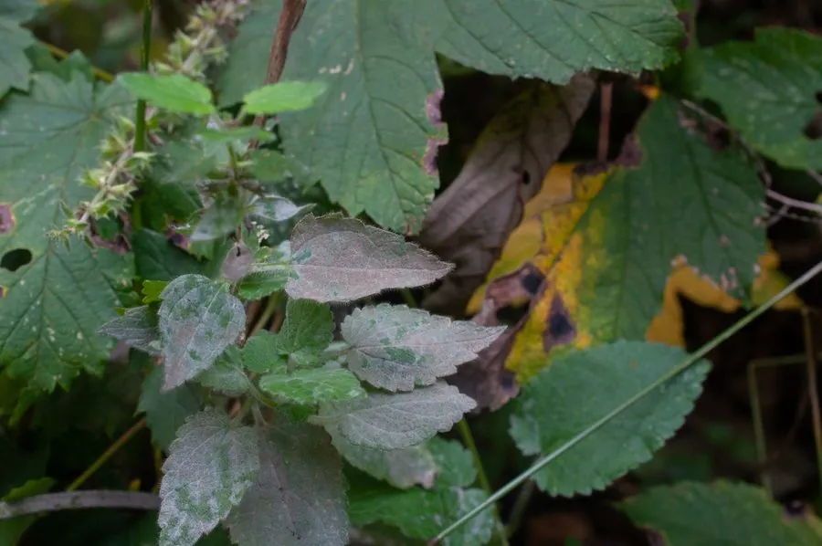

花卉与草本 · 植物界
使君子 Quisqualis indica

使君子科使君子属攀援灌木，花初开白色后转粉红至深红，一穗三色，种子是传统驱虫良药，是药用与观赏兼优的藤本。
- 分类
- 门被子植物门纲木兰纲目桃金娘目科使君子科属使君子属
- 栖息环境
- 溪边、林缘与灌丛，喜温暖湿润、阳光充足
- 地理分布
- 中国广东、广西、福建、海南、云南、贵州、四川、台湾；印度、缅甸、菲律宾
- 保护级别
- 暂无评估；未被列入国家重点保护野生植物名录
物种志
使君子为使君子科使君子属攀援灌木，茎长达数米，幼枝被短柔毛。叶片对生或近对生，椭圆形至卵形，全缘，表面深绿。花组成顶生的穗状花序，花冠管细长，花瓣五枚，初开时白色，后渐变为粉红、深红，同一花序上呈现三色，花期五月至九月，夜间香气浓郁；果实橄榄形，成熟时黑褐色，具五棱，果期秋冬季。
使君子分布于中国广东、广西、福建、海南、云南、贵州、四川、台湾等地，印度、缅甸、菲律宾也有，多生于溪边、林缘和灌丛。它喜温暖湿润和充足阳光，适宜疏松肥沃、排水良好的土壤。花穗三色渐变、夜间芳香，是优良的棚架观赏植物；干燥成熟的种子为使君子，是传统中药，有杀虫消积之效，但过量服用可致呃逆。
形态与习性
- 株高攀援灌木，茎长可达 5 m
- 花期5–9 月，花色由白转红
- 果期秋冬季，果实具五棱
- 光照喜光，全日照开花繁
- 水分喜湿润，忌积水
- 土壤疏松肥沃的壤土
- 主要用途棚架观赏，种子入药驱虫
趣味知识
- 使君子的花初开洁白，次日转粉，再变为深红，一穗上三色并存。
- 它的种子是传统驱虫药，因相传由郭使君发现而得名使君子。
- 使君子夜间香气浓郁，常吸引夜行性蛾类前来传粉。